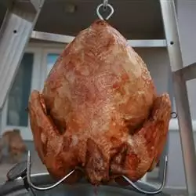

Fried Turkey

A fried turkey made by oven and with special sauce
- Prep: Make sure your stockpot or fryer is located outdoors in a safe area. Heat the oil to 350 degrees F. Cut any neck skin away from the thawed bird and make sure hole is at least 1-inch in diameter
- Season: Use a paper towel to pat the turkey dry. Season liberally with salt and pepper on the inside and outside
- Fry: Place the turkey, neck-side down, in a drain-basket. Gently lower the turky into the hot oil until it's completely covered. Continue frying until the turkey is cooked through. Remove from the oil, drain, and allow to rest for 15 minutes before carving.